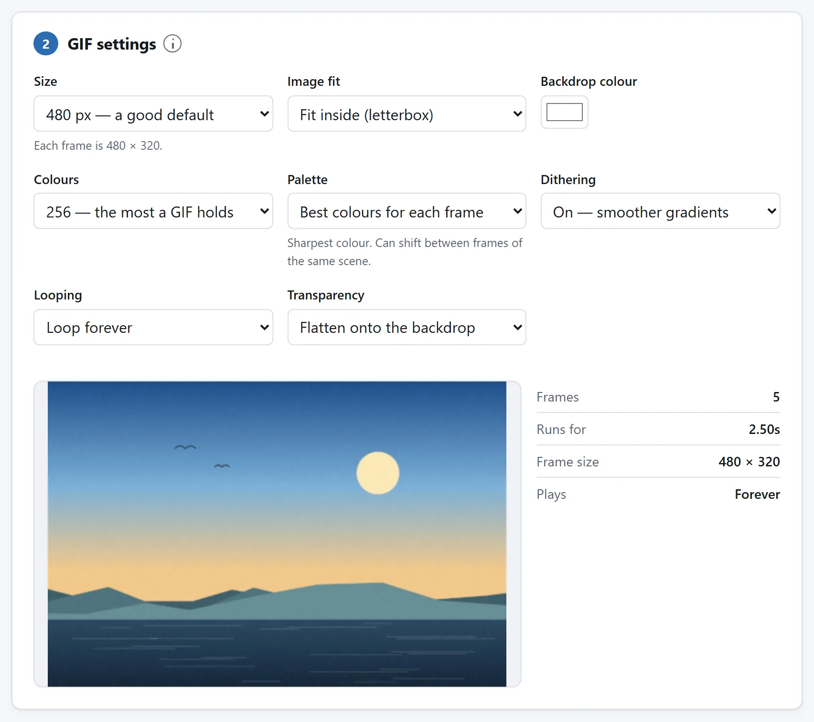
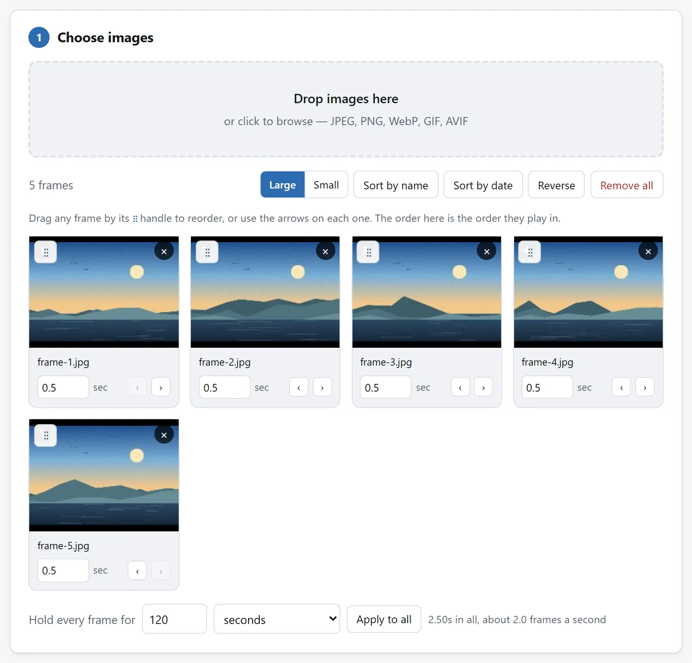

简短的回答
打开 GIF 制作，把图片拖进去，按它们该播的顺序排好，设定每一帧停留多久，然后做出 GIF。你还没保存，它就已经在页面上转起来了。
底下讲的全是随后会出岔子的那两件事：文件比预想的大得多，或者动画比你填的数字放得慢。两件都有明确的原因，也都不是工具的毛病。
两图比较，或一组动画
设计、房间或绘画的前后比较用同构图两张图，各停一两秒。裁边会藏变化就选装进框内。操作截图在需要读文字处停久些；制作器不加标题，标签先写进来源图片。
定格或渲染序列按名排序，从每秒 10 或 12 帧试起，场景相近可试共用调色板。要循环就查首尾接缝；比较或说明也可只播放一次。在实际网页、幻灯片或消息里看保存 GIF，有些地方只显示静图。
为什么 GIF 比你以为的大那么多
640 像素、20 帧的 GIF，动辄 8 到 15 MB。同一段动画换成 MP4 是几百 KB。那不是 GIF 做得差，那就是这个格式本身。
你用过的其他一切活动画面格式，存的都是差异。视频编码器写下一整帧，之后的帧只写什么动了、动到哪儿去了——所以一个人站在不动的背景前说话，那段视频每帧几乎不花钱。GIF 做不到这个。每一帧都是按整块像素存下来，过一遍无损压缩器，工具箱里就这么多。
也没有画质设置，因为压根没有一道有损环节可供你往下调。60 % 质量的 JPEG 是一个后面真有滑块的真选择；GIF 没有对应的东西。所以体积大致是面积 × 帧数，想撬动它，就只能去撬这两个数中的一个。
真正能让它变小的三件事
按它们管用的顺序：
1. 把它做小。这不是几个选项中的一个，这就是那个选项。体积随面积走，所以把长边砍一半，文件就剩四分之一：640 px 降到 320 px，12 MB 就成了大约 3 MB。网页里、聊天窗口里的 GIF，本来也就是按几百像素在看。工具的默认值是 480 px，正是为了这个；而 320 px 是个完全体面的答案。
2. 少用几帧。十帧、每帧停五分之一秒，和二十帧、每帧十分之一秒，是同样的两秒动画，而文件只有一半。流畅是按比例直接拿字节换的，所以只在动作真需要的地方花它。
3. 关掉抖动，把颜色降下来。这一条反直觉。抖动会撒下一层细密的交替像素，去假装调色板里没有的颜色，而那层花纹就是噪声——恰恰是无损压缩器压不动的东西。在平涂的图形、截图和线稿上，把它关掉能减掉三分之一的文件，还常常更好看。在照片上，它是拿看得见的色带去换这份省下来的体积，所以两种都试试，用眼睛判断。
从 256 色降到 64 色也有用，只是没人们盼的那么多：它缩短的是码字，而不是拿掉像素。
要是这些都还不够小，诚实的回答是：你在做的其实是一段视频。把同样这些图片做成 MP4，大概只有十分之一的体积；而凡是接受 GIF 却不是用在 <img> 标签上的地方——包括每一个社交网络——上传时反正都会把它转成视频。
GIF 到底能放多快
这个格式把每帧的延时按百分之一秒来存，这让人觉得你可以要 0.01 秒、拿到每秒一百帧。你拿不到。
每个浏览器都会把低于百分之二秒的延时抬到十分之一秒。这条规矩来自 1990 年代，当时的页面上塞满了「越快越好」的动画，而那个年代的机器扛不住；它引入时的所有理由早已不复存在，规矩却从没被拿掉，今天照样管着你的 GIF。
所以实际可用的区间是：
- 0.02 秒（每秒 50 帧）——GIF 被允许的最快值，而且通常比需要的还快。
- 0.05 秒（每秒 20 帧）——顺滑的动画；要做运动，从这儿起步。
- 0.1 秒（每秒 10 帧）——经典的 GIF 味道。帧数减半，文件减半，而且看上去像是有意为之。
- 0.5 秒往上——那是幻灯片。每张图是被看的，不是被动起来的。
低于 0.02 秒的值这里不提供，因为那是个在现存每一个浏览器里都会悄悄变成 0.1 秒的数。
调色板，以及它其实在挑什么
GIF 的一帧最多装 256 种颜色。一张照片有几万种。总得有谁从中挑出 256 种，而那次挑选决定了成品看起来什么样——比任何别的设置都决定得多。
工具给了两种挑法：
每帧各挑最合适的颜色，给每张图它自己的 256 色。这看着最锐，而且对一组彼此无关的照片来说是对的：反正每张要的本来就是完全不同的一套。
整个 GIF 共用一张调色板，是把所有帧放在一起造出一张表。当这些帧是一个连续序列时用它——同一个场景，隔着几个瞬间。用逐帧调色板的话，画面上任何一点变化都会改变被选中的是哪 256 色，于是整片背景每帧都轻轻挪一点颜色。那种抖动，正是让一个自制 GIF 一眼看上去就很自制的东西。共用调色板把它去掉了，还顺带让文件更小，因为那张表只写一次，而不是每帧都写。
更少的颜色——128、64、32——在任何平涂的东西上都值得试。一个只有八种颜色的标志动画，降到 32 色什么都不会丢；而照片上的差别，一眼就看得出来。

透明只有一位，故事到此为止
GIF 的一个像素，要么整个涂上，要么整个看不见。中间什么都没有：没有 50 % 的阴影，没有柔和的边，没有渐隐。
所以要是你的原图带透明，把透明打开会让透明的地方仍然透明——但每一条抗锯齿的边，那本是从形状渐变到虚无的过渡，都会在半途被一刀切成硬的、看得出锯齿的边。圆形和文字受害最深。
要是你知道这个 GIF 会摆在什么颜色上，把它压到那个颜色上，每次都会更好看。只有在落地的背景真的不知道时，才留着透明——而如果答案是「它在任何背景上都得有柔边」，那对应的格式是动图 PNG 或者 WebP，不是 GIF。
顺序、时间，以及让循环接得住
几件事，知道比自己撞上要快得多：
按名称排序会正确处理数字。渲染或导出序列中，frame_2 排在 frame_10 前面。按日期排序使用文件修改日期，可帮助恢复仍保持原顺序的序列，但不读取相机拍摄时间。复制或编辑过的照片可能需要手动排序，文件名从 0001 重新开始时尤其要检查。
最后一帧留久一点。每帧都一样长的循环，读起来紧追不舍。把最后一帧按住半秒左右，眼睛就有了落脚的地方，整件事看上去也像是有意为之。每一帧都有自己的停留时间，就是为了这个。
循环不该跳。最后一帧后面紧接着就是第一帧，所以这两帧差得远，循环就会「啪」的一下。要么让它们靠近，要么按住最后一帧，把这个切口用成一种手法。
只播一次就是只播一次。有些工具会写下「循环 1 次」，而各家解码器从来没就这个完全谈拢——有几个会播两遍。这里选「只播一次」，写下的是根本没有循环信息，而对这一点，有史以来的每个解码器处理起来都一样。

为什么这件事不需要服务器
做一个 GIF 是两件浏览器没提供的活：挑调色板，和用 LZW 压像素。两件都不大。加起来大约四百行，在仓库里原样写着，而且和这儿的其他一切一样跑在你自己的机器上——网线拔了这一页照样能用，原因就在这儿。
那么多 GIF 工具要你上传，不是因为这活儿难。是因为服务器才是广告和账号待的地方。把一叠照片变成一段动画，这件事的任何一步，都不要求你的照片离开它们所在的房间。
把文件传给在线转换器安全吗？那一页列了四条检查，它们会告诉你关于任何工具的同一件事，也包括这一个。